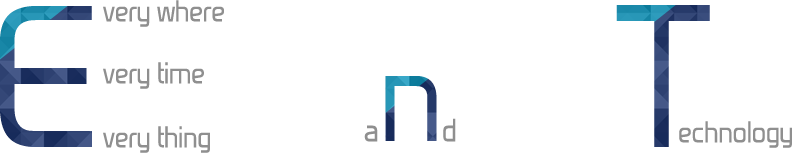
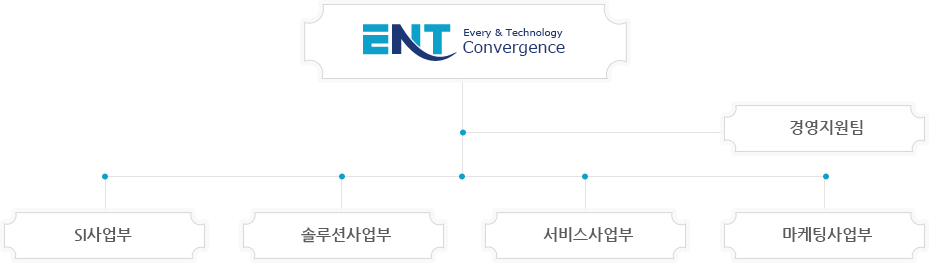

About EnT

3차 산업혁명이라 불리는 컨버전스(Convergence) 시대를 살아가고 있는 우리에게 산업, 공공, 금융, 교육, 고용, 복지 등
다양한 분야에 ICT(정보통신기술)를 융합함으로써 서비스의 제공자와 소비자 모두에게 만족을 줄 수 있는 세상을 만들어 가고 있는 기업입니다.
Vision & Goal
Vision 온∙오프라인의 경계를 넘어 다양한 분야에서의 정보통신기술의 융합 노하우의 축적을 통한 통합 플랫폼 구축
Goal ICT Convergence 선도기업
Organizaion

Business
주요사업분야
다양한 분야에 대하여 ICT 기술 융합을 통한 신 부가가치 창출
- SI (시스템 통합)
-
공공기관, 공기업, 금융, 일반기업 등 다양한
산업분야의 기업 업무환경과 요구에 맞는
최적의 IT시스템을 진단, 설계, 구축, 통합하여
고객의 경쟁력 향상을 위한
최상의 서비스를 제공합니다.
- 시스템 개발 및 운영
-
고객의 환경과 목적에 최적화된 맞춤형
시스템을 개발/구축하며, IT전 분야의
전문가들이 고객사의 시스템 자원을
효율적이고 합리적으로 관리, 운용하여
고객사의 정보시스템 활용률을 높입니다.
- 솔루션개발
-
통합관리시스템(CMS)과 주얼리매장관리시스템
솔루션, 각종 시험관리 통합솔루션 등을
보유하고 있으며, 다양한 ICT 기술 융합을 위한
기술력을 보유한 전문업체입니다.
주요고객
Solutions
- E-CMS
- 웹 콘텐츠 관리 시스템으로서 엔터프라이즈급 사이트 및 Web Service의 콘텐츠를 용이하게 관리할 수 있는 솔루션입니다. 오픈소스 기반으로 종속성이 없고, 디자인소스, 이미지, 프로그램 컴포넌트 등 콘텐츠 구성요소를 분리하여 구축관리하는 분리형 CMS로써 커스터마이징이 용이한 뛰어난 시스템 입니다. 사이트를 유지하기 위해 기획자, 콘텐츠 작성자, 개발자, 디자이너 등 각 운영자의 업무에 맞는 효율적인 관리가 가능합니다.
- E-SMS
- 온라인을 통하여 학생들의 성적/진도, 출석/결석 등 학사전반에 대한 관리는 물론이고, 학습 콘텐츠의 개발과 전달·평가·관리 등 교수학습의 전반적 과정을 통합적으로 운영·관리할 수 있는 솔루션 입니다.
- E-TMS
- 각종 시험에 대한 신청 및 결재 신청자 관리 등 시험운영 프로세스와, 완료된 시험에 대한 채점/평가관리 채점결과 및 통계 리포팅 기능을 제공하는 시험관리 통합솔루션 입니다.
Contact us
주소
서울특별시 구로구 가마산로25길 9-9 KM빌딩 3층
연락처
영업 및 제휴관련 : 02-855-7471 / hrnet@entcon.co.kr
대표/일반문의 : 02-855-7471 / hrnet@entcon.co.kr